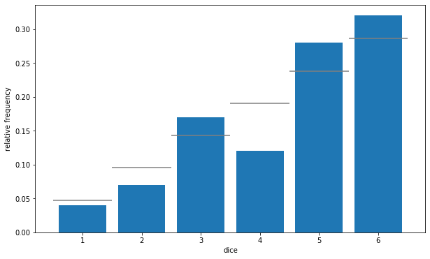
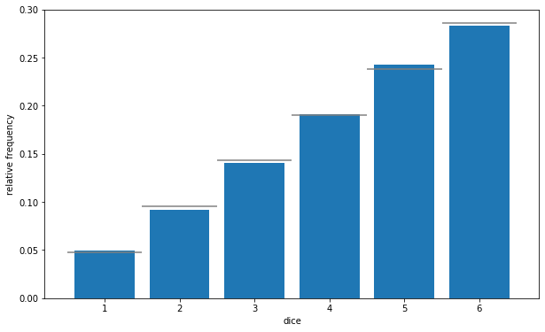
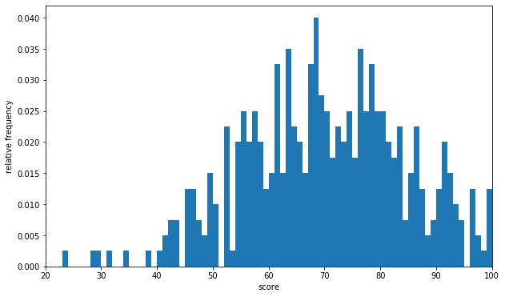
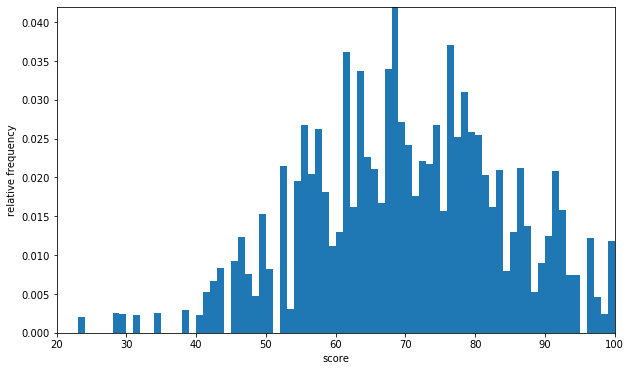
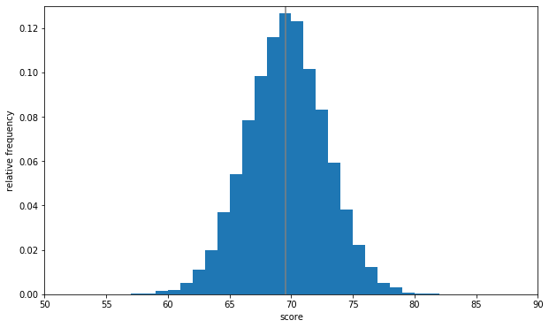

10. 모집단과 표본#
10.1. 표본 추출#
import numpy as np
import pandas as pd
import matplotlib.pyplot as plt
%precision 3
%matplotlib inline
df = pd.read_csv('../data/ch4_scores400.csv')
scores = np.array(df['score'])
scores[:10]
array([76, 55, 80, 80, 74, 61, 81, 76, 23, 80], dtype=int64)
np.random.choice([1, 2, 3], 3)
array([3, 1, 2])
np.random.choice([1, 2, 3], 3, replace=False)
array([1, 2, 3])
np.random.seed(0)
np.random.choice([1, 2, 3], 3)
array([1, 2, 1])
np.random.seed(0)
sample = np.random.choice(scores, 20)
sample.mean()
70.4
scores.mean()
69.53
for i in range(5):
sample = np.random.choice(scores, 20)
print(f'{i+1}번째 무작위 추출로 얻은 표본평균', sample.mean())
1번째 무작위 추출로 얻은 표본평균 72.45
2번째 무작위 추출로 얻은 표본평균 63.7
3번째 무작위 추출로 얻은 표본평균 66.05
4번째 무작위 추출로 얻은 표본평균 71.7
5번째 무작위 추출로 얻은 표본평균 74.15
10.2. 확률 모델#
10.2.1. 확률분포#
dice = [1, 2, 3, 4, 5, 6]
prob = [1/21, 2/21, 3/21, 4/21, 5/21, 6/21]
np.random.choice(dice, p=prob)
4
num_trial = 100
sample = np.random.choice(dice, num_trial, p=prob)
sample
array([6, 6, 5, 5, 6, 5, 2, 5, 6, 3, 5, 6, 6, 6, 5, 3, 3, 3, 5, 4, 6, 5,
2, 2, 5, 6, 6, 5, 5, 6, 6, 5, 5, 5, 6, 4, 4, 6, 2, 3, 6, 6, 5, 4,
5, 1, 4, 4, 6, 5, 4, 5, 6, 3, 6, 4, 6, 4, 5, 3, 6, 5, 3, 3, 6, 6,
5, 3, 3, 5, 4, 6, 3, 3, 2, 6, 1, 6, 2, 3, 6, 6, 1, 3, 4, 5, 2, 5,
1, 6, 6, 5, 3, 5, 5, 6, 5, 3, 4, 6])
freq, _ = np.histogram(sample, bins=6, range=(1, 7))
pd.DataFrame({'frequency':freq,
'relative frequency':freq / num_trial},
index = pd.Index(np.arange(1, 7), name='dice'))
| frequency | relative frequency | |
|---|---|---|
| dice | ||
| 1 | 4 | 0.04 |
| 2 | 7 | 0.07 |
| 3 | 17 | 0.17 |
| 4 | 12 | 0.12 |
| 5 | 28 | 0.28 |
| 6 | 32 | 0.32 |
fig = plt.figure(figsize=(10, 6))
ax = fig.add_subplot(111)
ax.hist(sample, bins=6, range=(1, 7), density=True, rwidth=0.8)
# 실제의 확률분포를 가로선으로 표시
ax.hlines(prob, np.arange(1, 7), np.arange(2, 8), colors='gray')
# 막대 그래프의 [1.5, 2.5, ..., 6.5]에 눈금을 표시
ax.set_xticks(np.linspace(1.5, 6.5, 6))
# 주사위 눈의 값은 [1, 2, 3, 4, 5, 6]
ax.set_xticklabels(np.arange(1, 7))
ax.set_xlabel('dice')
ax.set_ylabel('relative frequency')
plt.show()

num_trial = 10000
sample = np.random.choice(dice, size=num_trial, p=prob)
fig = plt.figure(figsize=(10, 6))
ax = fig.add_subplot(111)
ax.hist(sample, bins=6, range=(1, 7), density=True, rwidth=0.8)
ax.hlines(prob, np.arange(1, 7), np.arange(2, 8), colors='gray')
ax.set_xticks(np.linspace(1.5, 6.5, 6))
ax.set_xticklabels(np.arange(1, 7))
ax.set_xlabel('dice')
ax.set_ylabel('relative frequency')
plt.show()

10.3. 추측통계에서의 확률#
fig = plt.figure(figsize=(10, 6))
ax = fig.add_subplot(111)
ax.hist(scores, bins=100, range=(0, 100), density=True)
ax.set_xlim(20, 100)
ax.set_ylim(0, 0.042)
ax.set_xlabel('score')
ax.set_ylabel('relative frequency')
plt.show()

np.random.choice(scores)
63
sample = np.random.choice(scores, 10000)
fig = plt.figure(figsize=(10, 6))
ax = fig.add_subplot(111)
ax.hist(sample, bins=100, range=(0, 100), density=True)
ax.set_xlim(20, 100)
ax.set_ylim(0, 0.042)
ax.set_xlabel('score')
ax.set_ylabel('relative frequency')
plt.show()

sample_means = [np.random.choice(scores, 20).mean()
for _ in range(10000)]
fig = plt.figure(figsize=(10, 6))
ax = fig.add_subplot(111)
ax.hist(sample_means, bins=100, range=(0, 100), density=True)
# 모평균을 세로선으로 표시
ax.vlines(np.mean(scores), 0, 1, 'gray')
ax.set_xlim(50, 90)
ax.set_ylim(0, 0.13)
ax.set_xlabel('score')
ax.set_ylabel('relative frequency')
plt.show()
